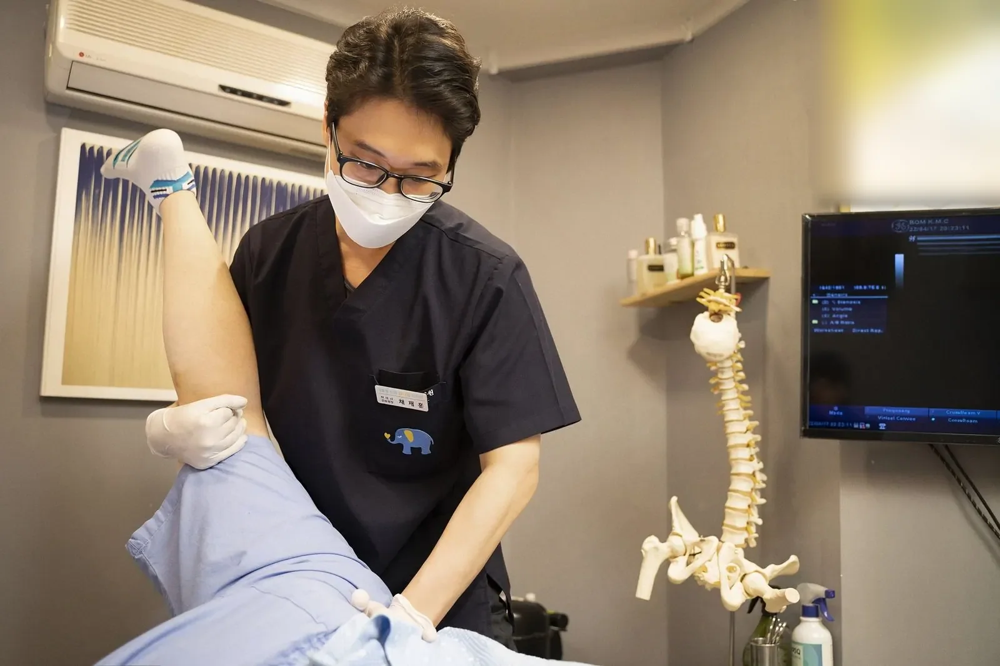
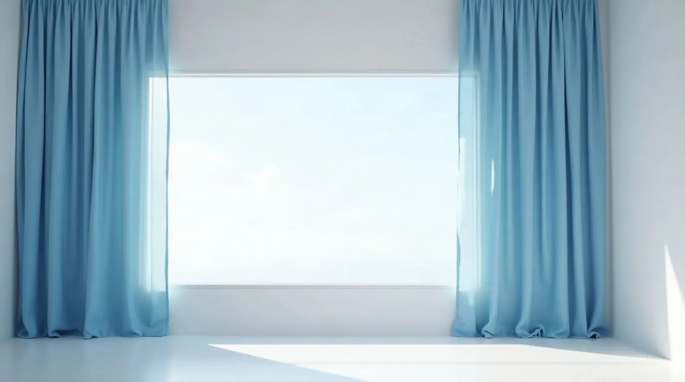

추나는 엎드리거나 옆으로 누운 자세에서 진행하는 경우가 많아, 배가 아주 부르거나 너무 고픈 상태는 피하고 가벼운 식사 뒤 한두 시간쯤 지나 오시면 편하게 받기 좋습니다.
여쭙는 것
- 오늘 마지막 식사는 언제였나요?
- 속쓰림이나 역류 증상이 있나요?
- 엎드리는 자세가 불편한가요?
생활에서 해 볼 것
- 가벼운 식사 뒤 한두 시간 두고 오기
- 과식과 기름진 음식은 피하기
- 너무 공복이면 가벼운 간식 챙기기
한의원에서 함께 살필 것
- 엎드린 자세가 불편한 경우 자세를 바꿔 진행할 수 있는지 함께 봅니다.
- 추나 뒤 뻐근함이 이어지는 경우 강도와 간격을 함께 조절합니다.
- 자세 습관이 반복되는 경우 생활 속 자세를 이어서 살핍니다.
먼저 확인이 필요한 신호
- 다리로 뻗치는 통증과 힘 빠짐이 있는 경우
- 대소변 조절이 어려운 경우
- 넘어진 뒤 허리 통증이 심한 경우

추나를 예약한 날 점심을 먹고 가도 되는지 궁금해하는 분이 많습니다. 추나는 엎드리거나 옆으로 누워 몸을 움직이는 수기요법이라 배가 너무 부르면 불편할 수 있고, 너무 공복이면 어지러울 수 있습니다.
예를 들어 점심을 든든히 먹고 20분 뒤에 엎드려 추나를 받으면 명치가 눌려 더부룩하거나 신물이 올라오는 느낌이 들 수 있습니다. 반대로 아침부터 아무것도 먹지 않고 오후 늦게 받으면, 치료가 끝나고 일어설 때 눈앞이 잠깐 어두워지는 분도 있습니다. 식사량과 시간을 조금만 조절해도 훨씬 편하게 받으실 수 있습니다.
왜 식사 시간을 맞추면 좋을까요
- 엎드린 자세에서 배가 눌리면 더부룩하거나 불편할 수 있습니다.
- 너무 오래 굶으면 누웠다 일어날 때 어지러울 수 있습니다.
- 편안해야 근육 긴장이 덜하고 반응을 말씀하시기 쉽습니다.
- 식후 바로 움직이면 속쓰림이 올라오는 분도 있습니다.
- 커피나 탄산음료를 많이 마시고 오면 엎드린 자세에서 속이 불편할 수 있습니다.

먼저 이렇게 여쭙니다
- 오늘 마지막 식사는 언제였나요?
- 속쓰림이나 역류 증상이 있나요?
- 엎드리는 자세가 불편한가요?
- 지난 추나 뒤 몸이 어땠나요?
일상에서 먼저 해 볼 수 있는 것
- 가벼운 식사 뒤 한두 시간 두고 오기
- 과식과 기름진 음식은 피하기
- 너무 공복이면 가벼운 간식 챙기기
- 물은 조금씩 마시고 오기
- 추나 직전 커피·탄산음료는 줄이고 오기

한의원에서 함께 살필 수 있는 경우
- 엎드린 자세가 불편한 경우 자세를 바꿔 진행할 수 있는지 함께 봅니다.
- 추나 뒤 뻐근함이 이어지는 경우 강도와 간격을 함께 조절합니다.
- 자세 습관이 반복되는 경우 생활 속 자세를 이어서 살핍니다.
좋은꿈참사랑한의원에서는 먼저 불편한 동작과 오늘의 컨디션을 여쭙고, 추나 대상인지 진찰한 뒤 진행합니다. 불편하면 바로 말씀해 주시면 강도를 조절하며, 건강보험 적용 여부와 본인부담금은 진찰 후 안내해 드립니다.
헷갈리기 쉬운 점
식사를 걸러야 추나를 잘 받을 수 있는 것은 아닙니다. 중요한 것은 배가 눌려도 불편하지 않고 일어설 때 어지럽지 않은 상태입니다. 평소 식사 시간이 불규칙하다면 예약 시간을 식사 사이로 잡는 것도 방법입니다.

이렇게 기록해 오시면 상담이 쉬워집니다
- 불편한 동작과 시간대
- 식사 시간과 속 상태
- 지난 추나 뒤 하루이틀의 느낌
- 척추 수술, 골다공증, 임신 여부
- 추나 받은 날의 식사 시간과 양
이런 증상은 먼저 확인이 필요합니다
- 다리로 뻗치는 통증과 힘 빠짐이 있는 경우
- 대소변 조절이 어려운 경우
- 넘어진 뒤 허리 통증이 심한 경우
복용 중인 약은 처방한 의사와 상의 없이 줄이거나 끊지 않습니다. 대소변 조절이 어렵거나 다리 힘이 갑자기 빠지면 응급실을 먼저 찾으세요.
한눈에 보는 표
| 구분 | 핵심 |
|---|---|
| 여쭙는 것 | 오늘 마지막 식사는 언제였나요? 속쓰림이나 역류 증상이 있나요? |
| 생활에서 해 볼 것 | 가벼운 식사 뒤 한두 시간 두고 오기 과식과 기름진 음식은 피하기 |
| 한의원에서 함께 살필 것 | 엎드린 자세가 불편한 경우 자세를 바꿔 진행할 수 있는지 함께 봅니다. 추나 뒤 뻐근함이 이어지는 경우 강도와 간격을 함께 조절합니다. |
| 먼저 확인이 필요한 신호 | 다리로 뻗치는 통증과 힘 빠짐이 있는 경우 대소변 조절이 어려운 경우 |
자주 묻는 질문
공복으로 가도 되나요?
너무 오래 굶으면 어지러울 수 있어 가벼운 간식을 권합니다.
식후 바로 받아도 되나요?
배가 부르면 엎드린 자세가 불편할 수 있어 한두 시간 두는 편이 좋습니다.
추나 뒤에 바로 먹어도 되나요?
대개 괜찮습니다. 몸이 무겁다면 가볍게 드세요.
물은 마셔도 되나요?
네, 조금씩 마시는 것은 괜찮습니다. 한꺼번에 많이 마시는 것만 피해 주세요.
이 글은 일반적인 건강 정보이며 개인의 진단이나 치료를 대신하지 않습니다. 증상이 있거나 복용 중인 약이 있다면 진료를 통해 확인하세요. 치료 효과는 개인마다 다를 수 있습니다.
작성 기준: 일반적으로 알려져 있는 건강 정보를 참고해 정리했습니다(대표원장 감수). 증상 기록은 1~2주 동안 하루 1회, 비슷한 시간에 적어 오시면 지난 상태와 비교하기 쉽습니다.
좋은꿈참사랑한의원은 재진 때 지난번 이야기부터 이어서 여쭙니다. 진료시간과 예약은 오시는 길에서 확인하세요.